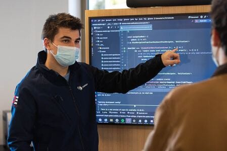
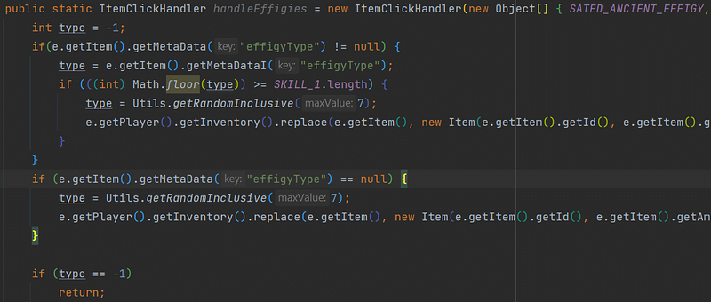
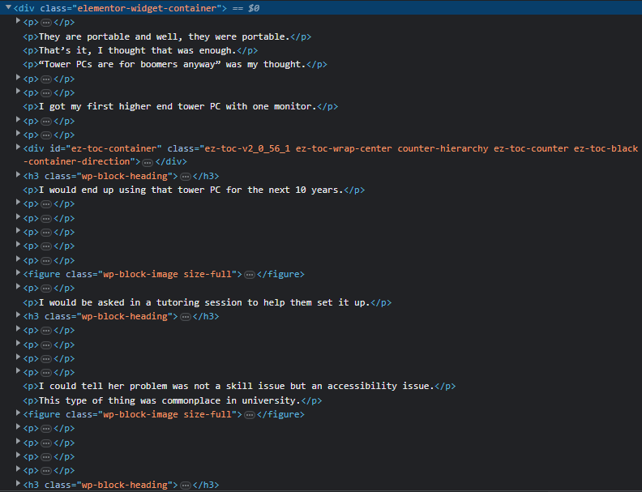
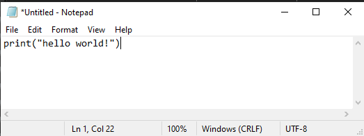
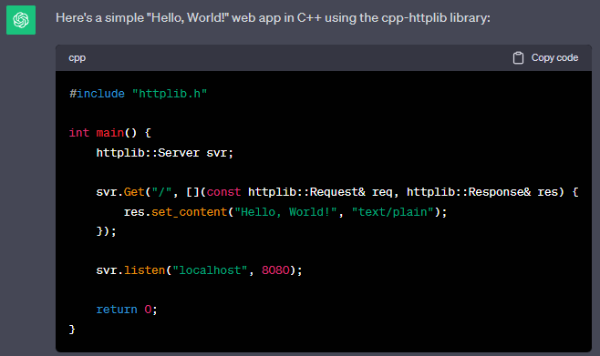
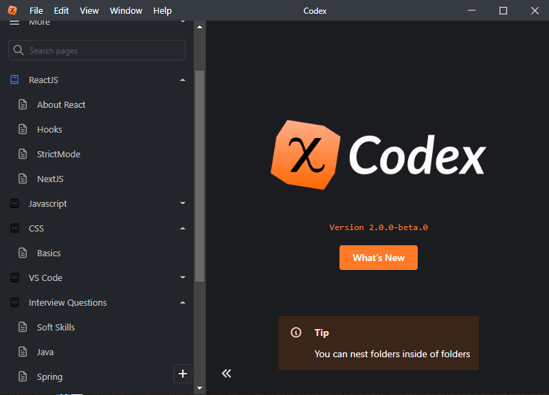

As I have been learning to code these past seven years I discovered 6 rules which I always follow when tackling new code topics.
Each of these will speed up your learning with greater ease.
Let's get into it...
Learn With a Teacher
As a rule of nature coding requires a teacher. It is such a complicated task that it is impossible to learn from the code itself.
To learn without a teacher is like trying to learn math from looking at equations.
Even those with 150+ IQ people can't figure that out. These geniuses read documentation and often watch lectures on programming. They learn from someone else, through self-learning.
Everyone needs someone who already knows how to do the thing to guide your self-learning, inner growth.
And, by teacher I mean the person who writes the Python documentation on python.org or the YouTube tutorial or your friend who guides you or even me in this blog.
Anybody who writes anything in regards to programming is your teacher.
Yes, anybody.
We all learn from someone.
Pick the best teacher
Within this mistake of not using teachers is the neglect to pick the best teachers.
Photo by Christin Hume
From an array of potential instructors, documentation, Udemy courses, YouTube videos and blogs, you should develop a palate for the best teachers.
Your taste for learning from a teacher should be developed and practiced.
Interestingly, everyone has a different taste as to which teachers are best.
Some people hate Udemy courses or think plain old documentation is the best.
Me personally, I love Udemy courses and often read documentation while coding.
But, some people succeed on YouTube tutorials while never reading documentation.
It is all about personal taste.
Photo by Ross Sneddon
I met an advanced coder who had been coding for 30+ years, he loves to play website documentation with an audio extension and listen while walking with his phone.
I tried that out after he told me, its actually not that bad.
But it goes to show we each learn differently.
What matters is developing how you know yourself to learn the fastest.
Learn Concepts and Don't Memorize
Oh man, every new developer I know seems to fall into this trap.
They memorize every function and class, thinking this is the way to "learn" programming.
In reality there is an infinite number of functions, classes datatypes, syntax and so many other parts to coding.
It is impossible to learn programming in this fashion.
You have to be a savant to memorize how to program specifically this way.
Photo by Mr. Bochelly
Instead what advanced developers do is memorize the concept behind the class or function, then google as they write it.
Though the function name and parameter is unique to the language, it is universal to the niche.
So, for example, if we create a class in Python the concept of classes passes to all object oriented languages but the Python syntax is unique.
Do we memorize the syntax or the concept?
No, we memorize the concept and look up the syntax while writing the code.
We do this for everything in coding until we have amassed a great encyclopedia of concepts.
The syntax and function names should not be manually remembered but put into our unconscious.
This might sound a bit woo woo, but hear me out.
As you implement code you learn the concept and write the code.
As you write there is an imprint of the experience on your neurology.
Photo by Nico Smit
There is this old saying that the brain never truly forgets or that the stimulus changes it forever. After every experience the brain is never the same.
This is what you should aim for when writing code.
To imprint that experience on your unconscious while consciously understanding concepts & terminology (how else will you describe the concept?).
Balance conceptual learning with implementation
There is a sort of balance between these things.
As you learn concepts you have to implement them for these imprints.
Sometimes you just need to do implementation/imprinting. Sometimes you just need to learn concepts for a while.
This is where full courses come in.
Photo by James
Full courses will help you amass your encyclopedia of concepts and teach you a language.
There is a dynamic relationship between learning and implementation
In my previous articles, like my article on full courses I talk about this extensively.
But, ditch the idea of memorizing functions and instead use a mixture of intellisense, implementation and learning theory.
Remember to learn terminology as well, as you need to describe these concepts somewhow...
Start on a Framework/Niche Last
I fell for this trap numerous times. I started a framework/niche before I knew the language.
In the past, I was excited to start developing a Runescape clone without knowing the primary language, Java, that well.
I struggled for two months and wondered why it was so hard.
I sat down and thought, why is this so hard?
Is it that Runescape is hard to code or is it something else?
I knew the fundamentals, but there was a bunch of syntax and advanced Java I didn't know.
I asked my developer friends what my deal was.
Code from a Runescape Clone
"How much Java do you know?" was the question they asked.
I responded, "I don't know I took two college classes in Java".
They said, in a much longer way, "learn Java first dude, that is really important".
So that is what I did. I wrote my Runescape clone less and dedicated myself to learning Java on Udemy.
After 3 months of focusing on Java I felt like I had learned as much as I could from those Udemy courses.
As I returned to my Runescape clone, I found myself making libraries and engine updates that were much more complex and useful.
The existing code was way easier to understand.
Had I not done that I know I would have been stuck in a programming rut.
There is an order...
There is an order to learning programming, layers on layers.
If you leave this order it just makes that task much much more difficult.
Here is the order of learning to code:
- Fundamentals
- Language
- Framework
- Niche
Each of these has to be learned before the other to optimally understand the niche.
Developer tools in Chrome
If, for example, you want to get into web development you must understand HTML/CSS and your backend to really have flexibility into your website.
Even backends like WordPress have a learning curve, a certain order.
If you want to become a data scientist, you have to learn the fundamentals then Python then NumPy/Pandas and finally the niche.
Anything outside of that order and well, it just doesn't work. They are requirements of each other, one after the other.
Optimize Your Workflow
Your workflow is monumental.
It defines your efficiency.
Without a good workflow, you work yourself with little progress.
What is a workflow?
It is how you create code, publish it and do things.
Let's say you want to make a hello world app.
Notepad
Here is one work flow.
- Open Notepad
- Type print hello world
- Save it to desktop
- Open command line on desktop
- Run python hello.py from command line on desktop
Here is another, more optimized one
- Open Visual Studio Code
- Create file
- Type print hello world
- Click run button
Which is easier?
Well for me the Visual Studio Code workflow is easier and less stressful.
But for you, well everyone has different taste.
All developers have different workflows which they have created.
As you code and learn you should always be re-creating your workflows and find the optimal one for yourself.
For example, if you start on an new IDE you have to figure out a new workflow for that editor.
If you just code inefficiently well, even that is a workflow.
There are programmers which state developing workflows are a waste of time.
But, jokes on them, that is a workflow too.
I absolutely love developing workflows and do it all the time.
The most fun part is when a new technology or IDE update comes out and you get to quicken your workflow.
Like how Chat-GPT came into the scene in the early 2020s. Adding Large Language Models to all your coding severely improves production.
Use AI to Learn Efficiently
You should find looking up framework or language syntax on Google to be somewhat insufficient.
As much as we don't like to admit it, it kind of always was.
Search engines have never been the perfect solution to learning to code, but it definitely was the best.
Nowadays we have gotten closer to perfect. But, with what...
Guess it....
LLMs (Language models).
Chat-GPT (2023)
We as developers have found a new way to learn coding.
Now is an even better time to learn how to code, not worse.
From 1960-1995 the ultimate way to learn was through textbooks.
From 1995-2020 the ultimate way was through search engines.
Now from 2020 forward we are using LLMs.
Create a Reference Manual for Every Topic
The goal of notes is to teach your future self what you are learning in the present.
It is really more of a reference manual.
My notes
If you learn without notes you are essentially degrading as you stop programming or learn a different niche.
With a reference manual you create, you can re-teach yourself the old stuff you once knew with much greater speed and ease.
In addition as you write your reference manual you solidify your learning in the present.
I write extensively on this topic in an article on creating your own reference manual.
Anywho, I hope you learned something...
Happy coding!